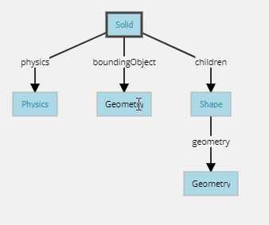
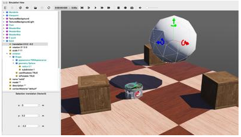

W17 <<
Previous Next >> 影片
翻譯
Webots用戶指南 教程2：修改環境
在本教程中，我們將教您如何在環境中創建簡單對象。 第一步將是創建一個與環境互動的球。 我們將處理與節點有關的幾個概念：它們的含義，如何創建它們，必須如何關聯它們等等。此外，我們還將了解如何設置物理學。
指數
1.新的模擬
2.修改地板
3.實體節點
4.創建一個球
5.幾何形狀
6.定義使用機制
7.添加牆
8.解決方案：世界文件
9.效率
10.結論
1.新的模擬
首先，我們根據教程1中的模擬創建一個新的模擬。
操作1:
確保打開了my_first_simulation.wbt world檔案，暫停模擬並且處於虛擬時間0。
使用“文件/另存World檔案為...”，將模擬保存為obarriers.wbt。
2.修改地板
默認的RectangleArena PROTO定義了一個固定在靜態環境上的簡單地板，即沒有Physics節點並且被牆壁包圍。 Webots對像庫中提供了其他預建地板。 現在，我們將刪除RectangleArena節點，並添加一個簡單的地板，在本教程的後面部分將用牆手動將其包圍。
操作2:
要刪除RectangleArena，請在3D視圖或場景樹狀圖中單擊鼠標左鍵將其選中，然後按鍵盤上的Delete鍵。 或者，可以在3D視圖中右鍵單擊它，然後在上下文菜單中選擇“刪除”（也可以直接在場景樹視圖中使用上下文菜單）。 選擇TexturedBackroundLight節點，然後單擊“添加”按鈕。 在打開的對話框中，然後選擇PROTO節點（Webots Projects）/對象/ Floors / Floor（Solid）。
新添加的Floor PROTO的默認大小為10m x10m，但是可以通過更改相應的字段來調整其大小，位置和紋理
操作3:
在場景樹狀圖中，選擇並展開“地板”。 修改大小字段並將其設置為{1，1}以將其大小調整為1m x1m。
3.實體節點
本小節介紹了Webots中最重要的基礎節點：Solid節點，許多其他節點都來自Solid節點。
甲固體節點代表一個剛體，即在其中變形可以忽略不計的主體。剛體上任意兩個給定點之間的距離在時間上保持恆定，而不管施加在其上的外力如何。例如，桌子，機械手指骨或輪子是剛體。軟體和關節物體不是剛體。例如，繩索，輪胎，海綿或關節式機械臂不是剛性體。但是，可以將一個鉸接的實體分解為幾個剛體。
要定義剛體，您將必須創建一個實體節點。在此節點內，您將根據剛體的特性設置不同的子節點。下圖描繪了剛體及其子節點。實體節點的圖形表示由填充其列表的Shape節點定義children。碰撞範圍在其boundingObject字段中定義。圖形表示和碰撞形狀通常但不一定相同。最後，該physics字段定義對像是屬於動態環境還是屬於靜態環境。所有這些子節點都是可選的，但是physics需要boundingObject定義該字段。

Webots中剛體的最簡單模型，具有圖形表示，物理邊界對象並且處於動態環境中。
幾何框（在此圖中）代表任何種類的幾何圖元。實際上，它可以用Sphere，Box，Cylinder等代替。
4.創建一個球
現在，我們將球添加到模擬中。如原本那個球將被建模為剛性體圖。一球節點將被用來定義我們的球的幾何形狀。
操作4:
在場景樹狀圖中，選擇最後一個節點，然後按Add按鈕。在對話框中，打開該Bases nodes部分，然後選擇“ 實體”節點。在場景樹視圖中，展開“ 實體”節點並選擇其children字段。使用按鈕向其添加一個Shape節點Add。選擇“ 形狀”節點的appearance字段，然後使用按鈕添加一個節點。AddPBRAppearance
1.將球體節點添加為geometry新創建的形狀節點的字段。
2.展開PBRAppearance節點並將其metalness字段更改為0，並將其roughness字段更改為1。
3.將另一個Sphere節點添加到Solid的boundingObject字段。
4.最後，將一個Physics節點添加到Solid的physics字段中。
5.通過修改實體節點的translation字段，將球放在機器人的前面（例如）。{0, 0.2, -0.2}
6.保存模擬。
7.結果如圖所示。

Webots中的第一個剛體。
當模擬開始時，球擊中地板。您可以通過向球施加力來移動球（Ctrl + Alt +左鍵單擊+拖動）。通過啟用View / Optional Rendering / Show Contact Points菜單項，可以將球和地板之間的接觸點顯示為青色線。
W17 <<
Previous Next >> 影片